QA fidbeki bajarildi — yakuniy tekshiruv o‘tdi
12-versiya. 11-versiyadagi 9 javob (hammasi A) kodda. Tunda 23 darsning hamma sinovi yurdi, oltin namunalar yozildi. Tekshiruvda yana 3 ta kamchilik topildi — tuzatildi (pastda suratlari bilan). QA sayti yangilandi (06:48) — 24 ta fayl lokal yig‘ma bilan bayt-bayt bir xil.
QA’ga «yangilandi» xabarini siz yozasiz. Pastda 4 savol: tungi uch tuzatishga rozimisiz va commit. Rozi bo‘lsangiz — hech narsa bosmasdan «Javobni nusxalash» va chatga tashlang.
if C-bloki rangi.Nima tekshirildi
Hammasi lokal demoda, bittadan (kompyuter qizib ketmasligi uchun). Oxirgi o‘zgarishdan keyin hamma demo qayta yig‘ildi va 23 darsning oltin namunasi yana bir bor solishtirildi: 19 dars — farq 0; 6, 7, 12, 15-darsda ko‘rinmas vaqtinchalik elementlar chiqdi (pastda, «Sinov vositalari») — tuzatildi, yangilangan 6 dars namunasi qayta solishtirildi — hammasi farq 0 (07:34). Endi 23 darsning hammasi namuna bilan mos.
Oltin namuna — darsning har bir holati (ustoz har qadam, bola har ekran, solo, yonma-yon, varaq): surat, matn va HTML. Bundan keyin dvigatelga tegilsa, 23 dars bir buyruq bilan solishtiriladi. 1–14-darsda eski namuna bilan har bir farq ko‘z bilan ko‘rildi — hammasi QA tuzatishlari va sizning javoblaringizdan (▶ belgisi, C-blok, javon, ishoralar, «Dars tugadi» yozuvi, kartadagi labirint, ro‘yxat ✓). Kutilmagan farq yo‘q. 15–23 uchun namuna birinchi marta yozildi va darhol ikkinchi yurish bilan solishtirildi.
Yana uch kamchilik
Siz «tuzatish kerak bo‘lsa, halol avtopilotda tuzat» degansiz — tuzatdim. E’tirozingiz bo‘lsa, B ni tanlang — qaytaraman.
1. Ustoz varag‘i telefonda yopilib qolardi
Kechagi «Telefonni yotqizing» yozuvi (Q02) dars sahifasining hammasiga qo‘yilgan edi — ustoz varag‘iga ham. Varaq esa telefonda tik holda o‘qish uchun yasalgan: ustoz uni telefonda ochsa, faqat «Telefonni yotqizing» ko‘rinardi. Endi yozuv faqat dars ekranlarida. Bu oltin namuna vositasi yiqilganda topildi — varaqning to‘liq surati olinayotganda Chrome shu qoida uchun shrift so‘ragan.
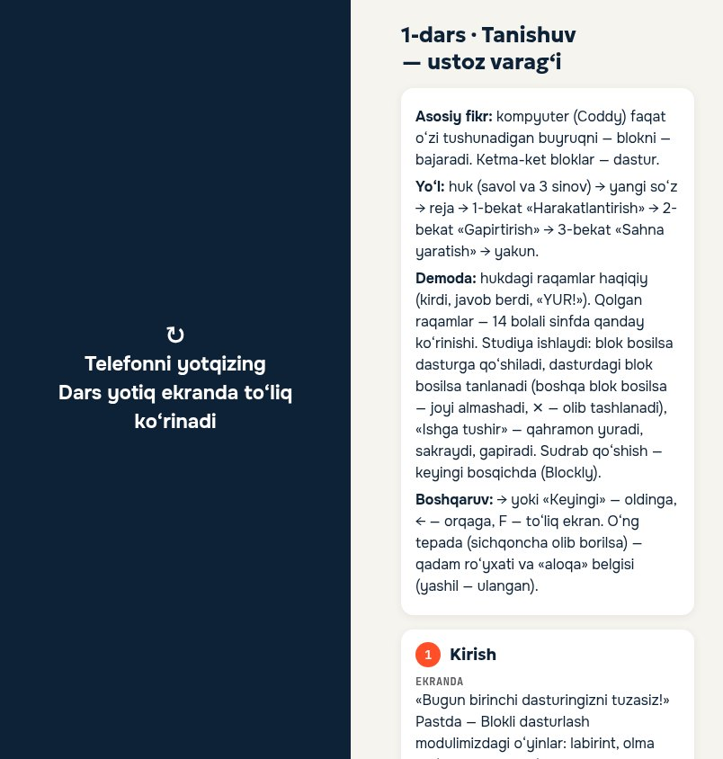
2. 19-dars «Kod nima?»: blok o‘z joyidan chiqardi
QA fidbekidagi 16-band uchun uchinchi kartani kengaytirgan edim (kod sig‘sin deb). Natijada birinchi kartadagi move right bloki (93 px) o‘z joyidan (88 px) chiqib qoldi — setka tekshiruvi tutdi. Uchinchi kartada kodga 13 px ortiqcha joy bor edi: birinchi karta biroz kengroq, uchinchisi biroz torroq. Ko‘zga deyarli bilinmaydi, lekin qoida — blok o‘z qutisidan chiqmaydi.
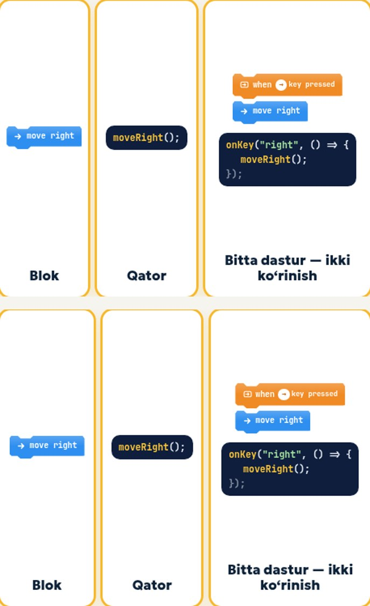
3. if C-bloki: yoni va tubi boshqa rangda edi
Kartalardagi (yangi so‘z, «O‘tgan darsda», huk) if path → then blokining sarlavhasi kulrang-ko‘k, yoni va tubi esa repeat yashilida edi. Studiyada (Blockly) bola bu blokni boshdan-oyoq bitta rangda ko‘radi. 12- va 15-darsdagi if = bloki allaqachon to‘g‘ri edi — if path qolib ketgan. Ta’sir: 8, 9, 10-darslar (14-darsda ham bor, lekin ko‘rinadigan ekranda emas). Oltin namunada shundan boshqa farq chiqmadi.
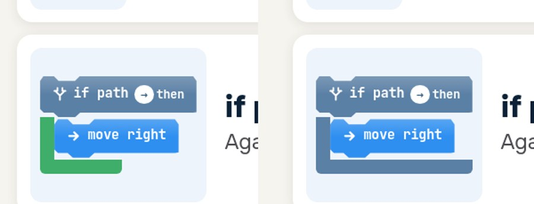
Sinov vositalaridagi olti tuzatish
- 21-dars sinovi qizil chiqdi — xato sinovning o‘zida edi (kechagi 21-dars kartasi qatorida bitta belgi). Dars to‘g‘ri ishlardi: tuzatilgan sinov 30 / 30 va 33 / 33. Qolgan 95 sinov faylida shunday xato yo‘q.
- Oltin vositasi yuqoridagi shrift so‘rovida butun yurishni to‘xtatardi — yopilgan sahifadagi so‘rov endi e’tiborsiz qoladi.
- 16-dars namunasi: huk sinovida dushman joyi tasodifiy — ikki yurishda 3 holat boshqacha chiqdi. Tasodif namuna uchun qotirildi (18–23-darsdagidek), endi 126 / 126.
- 17-dars namunasi: «o‘q uchyapti» surati qaysi blok yonib turganiga qarab o‘zgarardi — o‘rniga «o‘q uchdi» (yakuniy holat) olinadi, endi 126 / 126.
- 6, 7-dars namunasi: takrorlash sanog‘i («3») dastur tugagach 0,9 soniyada o‘chadi. Tunda kompyuter band paytda namuna kech olinib, belgisiz yozilgan edi — suratda farq yo‘q, faqat sahifa matnida. Namuna odatiy holat (belgi bor) bilan yangilandi.
- Tugma aks-sadosi (o‘yinda strelka bosilganda 0,4 soniya chiqadigan «→») suratga goh tushar, goh tushmasdi (12-dars) — namuna olishda olib tashlanadi; belgining o‘zini QA tekshiruvi (13 / 13) alohida tekshiradi.
Sinf aloqasi internet orqali hali ishlamaydi — Vercel loyihasiga Upstash Redis qo‘shilmagan (16.11 dan ochiq, sizda). QA bitta brauzerda yoki solo’da ko‘radi; bu o‘zgarmadi.
Commit
4. Junior o‘zgarishlarini commit qilaymi?
Oxirgi Junior commit — 22.11 13:28. Undan beri new-junior/ da 149 fayl: QA tuzatishlari, 11-versiya javoblari, tungi tuzatishlar, oltin namunalar (suratlarsiz — ular git’ga kirmaydi), yangi sinovlar, QA fidbeki ro‘yxati, seans skriptlari va shu sahifa manbasi (12 MB). Faqat new-junior/, push yo‘q.
11-versiya — javob berilgan (hammasi A, bajarildi)
Nima tuzatildi
Tekshiruv: demolar 17:29 da qayta yig‘ildi. Yakuniy tekshiruvlar yurmoqda — javon (har oila, 23 dars), kartadan chiqish (yangi tekshiruv), setka Chrome + Safari, tegilgan darslarning to‘liq dars / solo sinovlari. Natija shu yerga qo‘shiladi.
| ID | Dars | QA nima dedi | Nima qilindi |
|---|---|---|---|
| 01 | 13 | Safari’da bloklar kartadan chiqadi | 21.11 da tuzatilgan; Safari setkasi bugun ham toza |
| 03 | 4 | «Uch sinov»da hech narsa bosilmaydi | C kartadagi strelkalar bosiladi; ishora «Strelkani bosing — klaviaturada yoki kartada» |
| 05 | hamma | «O‘tgan darsda» kartasida repeat yarashmagan | Statik C-blok bir butun — sarlavha va tub ichki blokcha |
| 06 | 10 | C kartada labirintlar kartadan chiqadi | Hamma enda 7 px chiqardi — ixchamlandi; yangi tekshiruv har ekranni 5 ta enda o‘lchaydi |
| 08, 18 | 15, 23 | Dasturchalar ustma-ust | 10-versiya 7-savoli (masshtab; 15-darsda dastur ustuni kengroq) |
| 09 | 4, 18 … | Javondagi blok matni qirqilgan | Sig‘masa — ikkinchi qatorga o‘tadi (matn qirqilmaydi); 4-darsdagi «go to x: y:» ham shunday edi |
| 11 | 17, 18 | «ta dushman urdi» | «ta dushman urildi», «ta nishon urildi» |
| 13 | 18 | (suratda) «11 / 10 ta blok» | 3-bekat chegarasi 12. Muhim: B3B pog‘onasini bola umuman yecha olmas edi — yechim 11 blok |
| 15 | 19 | «O‘tgan darsda» mantiqan xato | Izoh: «Raketa, o‘q va dushman — har birining o‘z dasturi» (sarlavha takrori edi) |
| 16 | 19, 20 | «Kod nima?»: kod kartadan chiqqan | Uchinchi karta kengroq, kod qutisi ixcham |
| 17 | 21, 15 | Sarlavhada rang so‘zni bo‘lgan | «Kartani to‘ldiramiz», «Juftlikdasiz» |
| 19 | 11 | (o‘zimiz topdik) | «▶ Tekshirish» tugmasi qatordan tushib, chetda qirqilardi — umumiy .xira klassi bilan to‘qnashuv; jonli darsda ham |
| — | 18 | (o‘zimiz topdik) | 17-dars yakunida labirint ro‘yxati chiqardi — tuzatildi; kosmik o‘yin sinovi tasodif ketma-ketligiga bog‘liq edi — mustahkamlandi |
QA so‘ragan 7 ta savol
Har savolda QA suratidan ko‘rinish va tavsiya. Raqamlar — fidbek ro‘yxatidagi ID (fidbek/F-1125-qa/ROYXAT.md).
1. Telefonda ochish (F-1125-02)
QA telefonda (412 × 924) ochganda ekran kichrayib, o‘ngga siqilgan — «Keyingi» qirqilgan. Telefonni yotqizish taklifiga siz «Qabul» degansiz. Hozir qa.html «Faqat kompyuterda ochiladi» deydi.
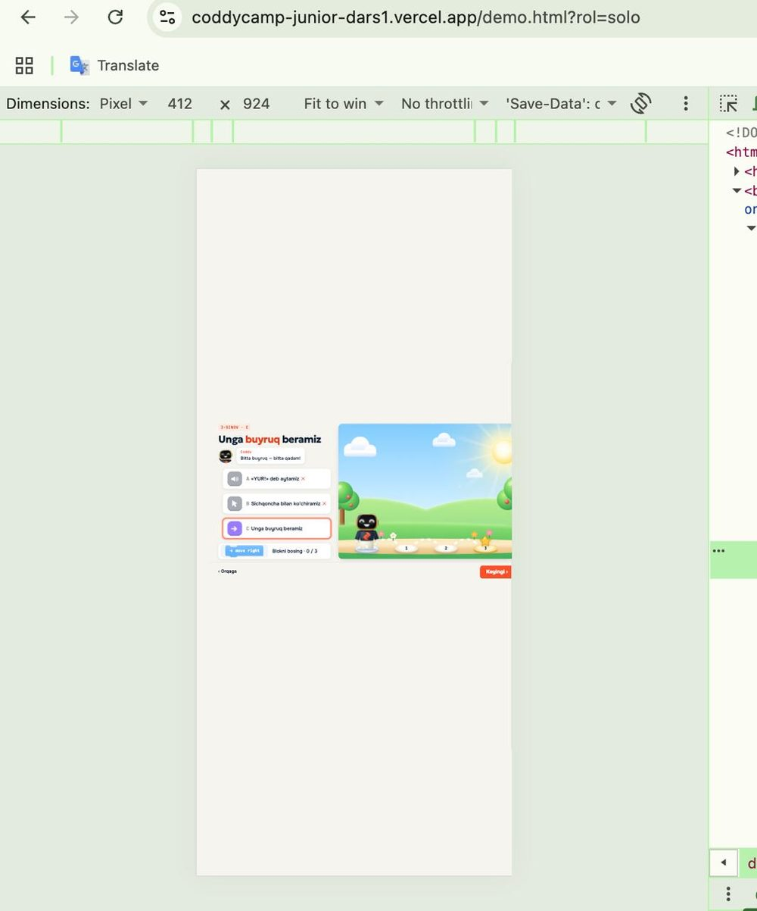
2. Bola ko‘p dasturcha qo‘shsa (F-1125-04)
QA 4-darsda 7 ta dasturcha qo‘shgan — dastur ustuniga sig‘madi, pastkilari ustma-ust tushdi. Bugungi 7-savol tuzatishi faqat tayyor dasturlar uchun (masshtab 0,45 gacha). Bola o‘zi qo‘shganda ham chegara kerak.
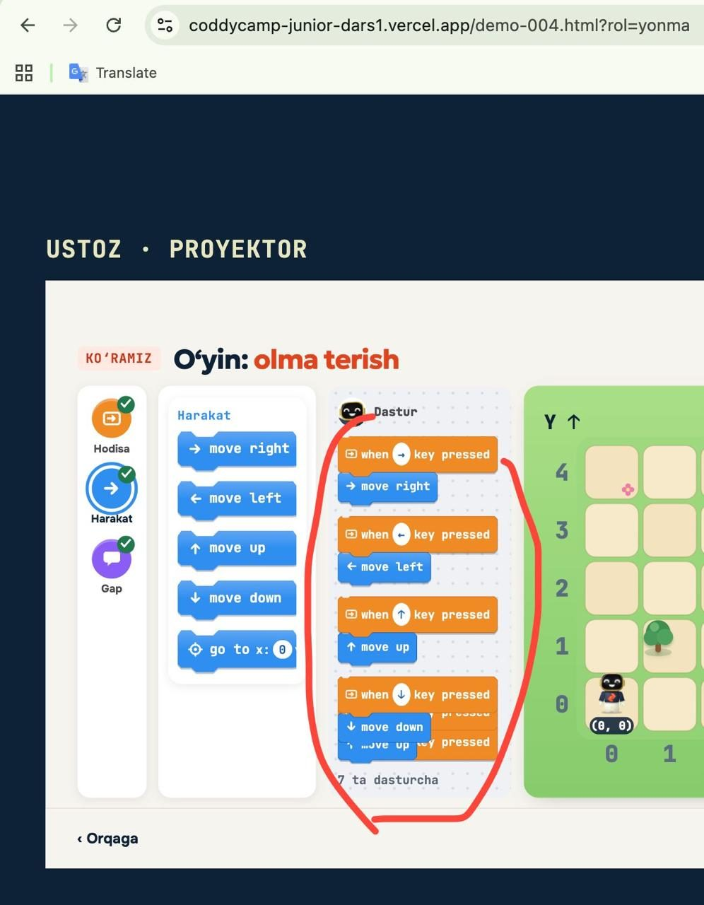
3. Blokni sudrab ajratish (F-1125-07)
QA 14-darsda move right ni repeat tepasiga qo‘ygach, uni yolg‘iz sudrab ola olmagan: sudrasa, pastidagi bloklar ham birga keladi, qo‘yib yuborsa — dvigatel dasturga qaytarib ulaydi. Bitta blokni olib tashlash hozir: bosib tanlash → ✕. Scratch’da ham blok pastidagilar bilan birga sudraladi (23-darsda Scratch’ga o‘tiladi).
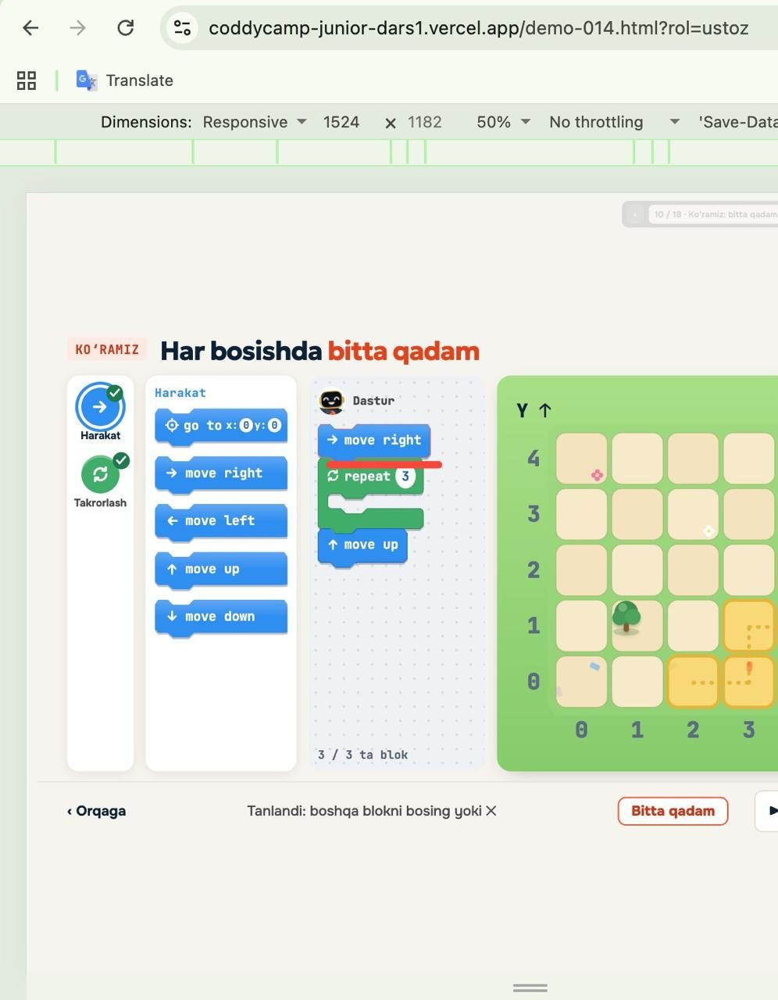
4. «O‘yiningizda:» ro‘yxati matni (F-1125-10)
QA: ba’zi bandlar aniqroq, to‘g‘ridan-to‘g‘ri bo‘lsin. Ro‘yxat 18, 20–23-darsda bir xil:
- Dushmanlar tushadi · O‘q urganda ball · Tekkanda jon · Jon tugasa — o‘yin tugaydi · O‘yin yutildi
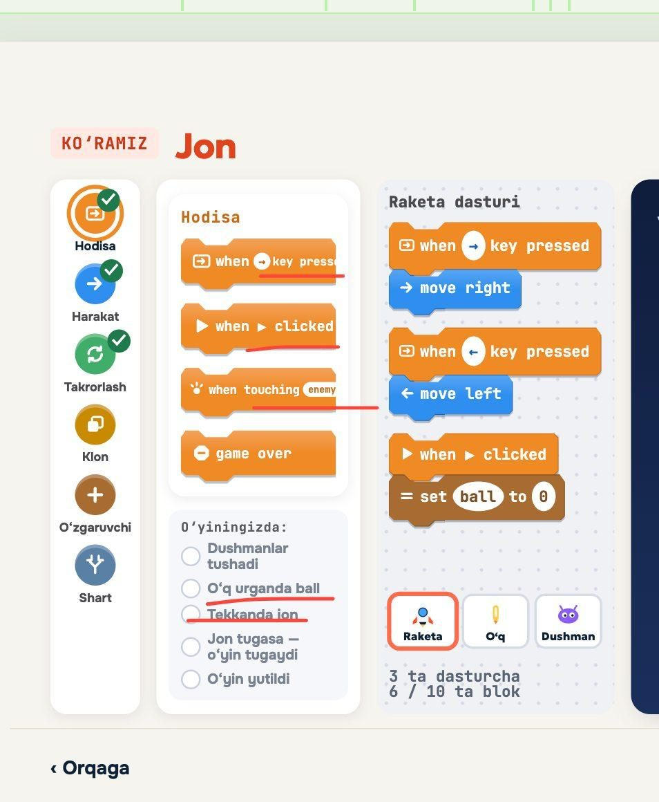
5. Raketa tezligi (F-1125-12)
QA: qiyin o‘yinlarda raketa sekin — dushmandan qochib ulgurmaydi. O‘lchov (bugun): bitta strelka — raketa bir katak yuradi, keyingi bosish ~330 ms dan keyin qabul qilinadi; dushman har 0,6 s da bir katak tushadi.
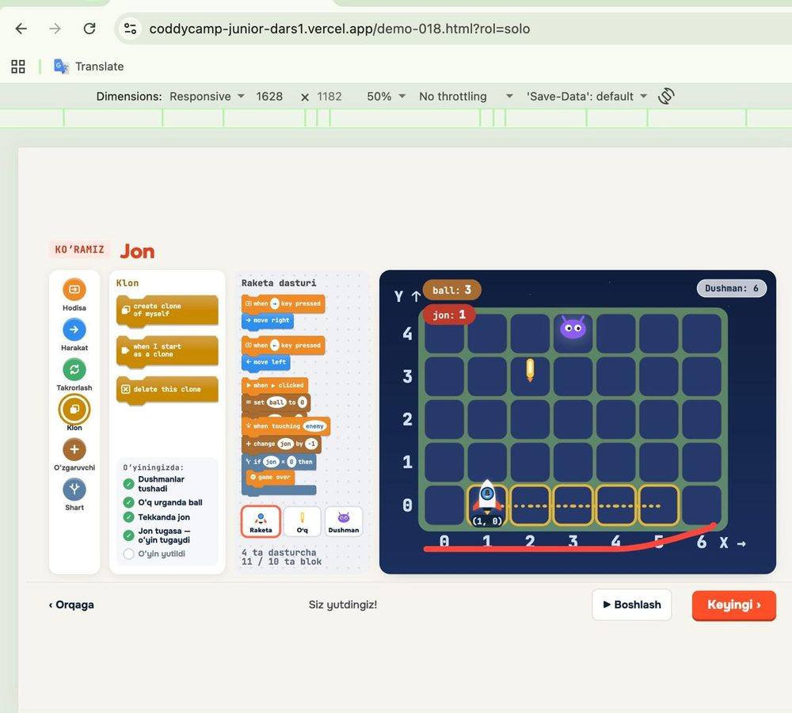
6. Solo yakuni: keyin nima bosiladi? (F-1125-14)
Bola darsni o‘zi o‘tganda yakun ekranida tugma yo‘q — pastda faqat «Dars tugadi». QA: «keyin nimani bosib chiqiladi?». Hamma darsda shunday. LMS’da dars shu yerda «tugadi» deb belgilanadi.
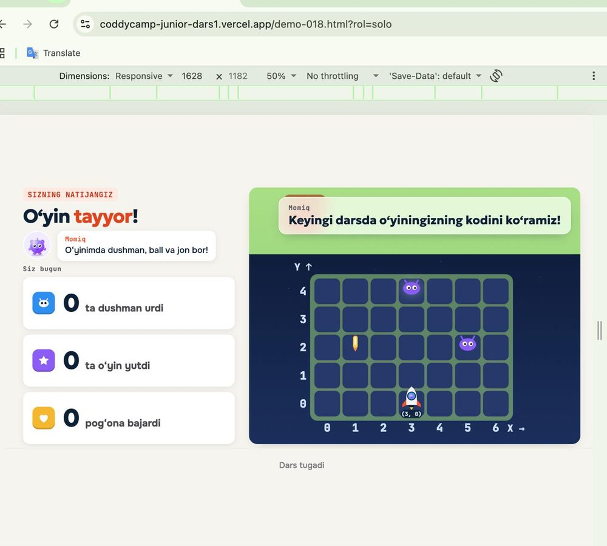
7. 21-dars: ustoz kartasi tayyormi yoki tanlanadimi? (F-1125-17)
Ustoz ekranidagi «Kartani to‘ldiramiz» — namuna (do‘stim · 5 · 2 · 3), bosilmaydi. Coddy esa «Har qatorda bitta tanlov» deydi — QA tanlash kerak deb o‘ylagan. Manbada: ustoz kartani sinf oldida to‘ldiradi, bola o‘zinikini keyingi qadamda.
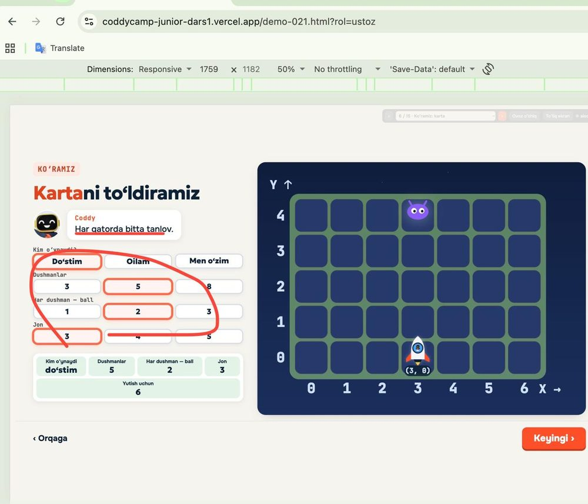
Oxirgi ikki qadam
8. Oltin namunalar
1–14-dars namunalarida kutilgan farqlar: solo ▶ belgisi (hamma dars), 12-dars yakuni (kapsulalar), 5/13/14 (21.11 dan ma’lum). 15–23 uchun namuna hali yo‘q (18–23 — stsenariy ham). QA tuzatishlari va sizning javoblaringizdan keyin yoziladi.
9. QA saytiga qayta chiqarish
10-versiya — javob berilgan (hammasi A)
Solo’da ▶ belgisi oq fonda oq edi
Bola darsni ustozsiz o‘tganda topshiriq ekranida «Keyingi ›» qo‘shiladi, asosiy tugma («Boshlash», «Ishga tushir», «Tekshirish», «Sinab ko‘rish») oq tugmaga aylanadi. Ichidagi ▶ esa oq qolib, ko‘rinmay qolardi — tugmaning chap tomoni bo‘sh. Endi belgi tugma matni rangida. O‘yin to‘xtaganda tugma eski nusxasidan tiklanadi, shuning uchun tuzatish uslubda (kodda almashtirilsa, to‘xtagach yana oq bo‘lardi).

Manbalardagi ochiq savollar
1. 17-dars yakuni: «O‘yiningizda:» ro‘yxati
Manbada bola yakun ekranida ro‘yxat bor («Raketa yuradi · O‘q otiladi · O‘q o‘chadi · Hamma nishon urildi»), darsda yo‘q. 9- va 10-darsda shu ro‘yxat yakunda turadi.

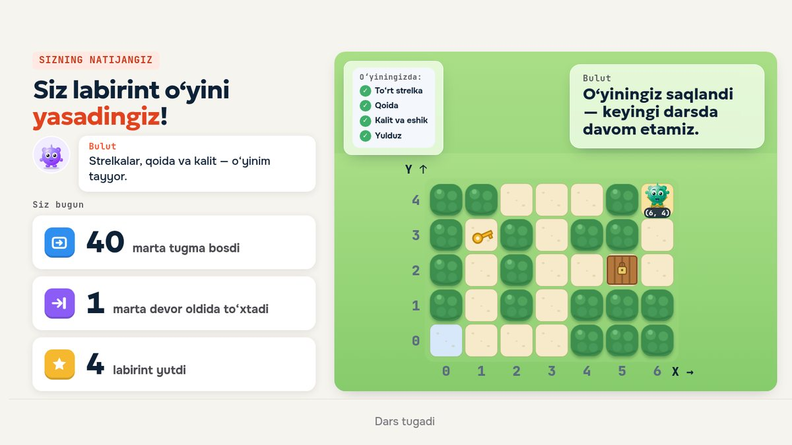
2. 18-dars, «Har xil ustun» pog‘onasi: maslahat matni
Dushmanlar bitta ustundan tushsa, «Son o‘rniga random qo‘ying» chiqadi. Lekin bu pog‘onada tayyor dasturda go to yo‘q — almashtiradigan son ham yo‘q, bola nima qilishni bilmaydi. Javondagi go to bloki «x: 3, y: 4» bilan turadi, ya’ni y ni o‘zgartirish shart emas.


3. 20-dars: test qanday bo‘ladi?
Hozir test — amaliy topshiriq: o‘sha kosmik o‘yinda bola dasturni noldan tuzadi, maslahat yopiq («Test: o‘zingiz yeching»). Savol-javob testi (rasm va 3 variant) 59-qarorga zid — dars ichida test savoli yo‘q — va yangi mexanika talab qiladi.


4. 21-dars: loyiha kartasidagi qiymatlar
Bola to‘rt qatorni tanlaydi: kim o‘ynaydi · dushmanlar 3 / 5 / 8 · har dushman 1 / 2 / 3 ball · jon 3 / 4 / 5. Yutish uchun ball o‘zi hisoblanadi (ball × dushmanlarning yarmi, yuqoriga yaxlitlab: 5 dushman × 2 ball → 6). Halol aytaman: 27 kombinatsiyaning hammasi yutiladigan ekani bot bilan hali o‘lchanmagan.
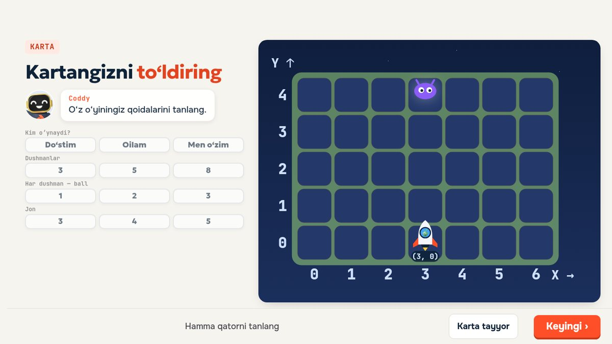
5. 23-dars: «ta mehmon yutdi» soni
«Mehmon yutdi» ekranida o‘yinni mehmon (ota-ona) o‘ynaydi, bola aytib beradi. Dvigatel kim o‘ynayotganini bilmaydi: bola o‘zi o‘ynab yutsa ham son «mehmon yutdi» bo‘lib sanaladi.
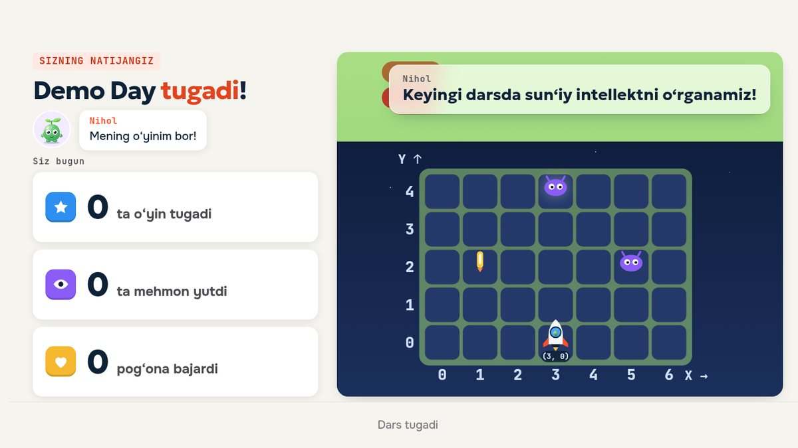
6. 23-dars: Scratch’ga o‘tish yo‘riqnomasi
Bola noutbukida uch qadam («Scratch saytiga kiring — ota-onangizdan ruxsat so‘rang» · «Yangi loyiha oching» · «O‘yiningizni o‘zingiz yasang»), ustoz ekranida jadval «Blok studiya → Scratch» (hodisa, klon, o‘zgaruvchi). Dars ichida Scratch ochilmaydi: sinfda internet kafolatlanmagan, 13 yoshdan kichiklarga ota-ona ruxsati kerak.
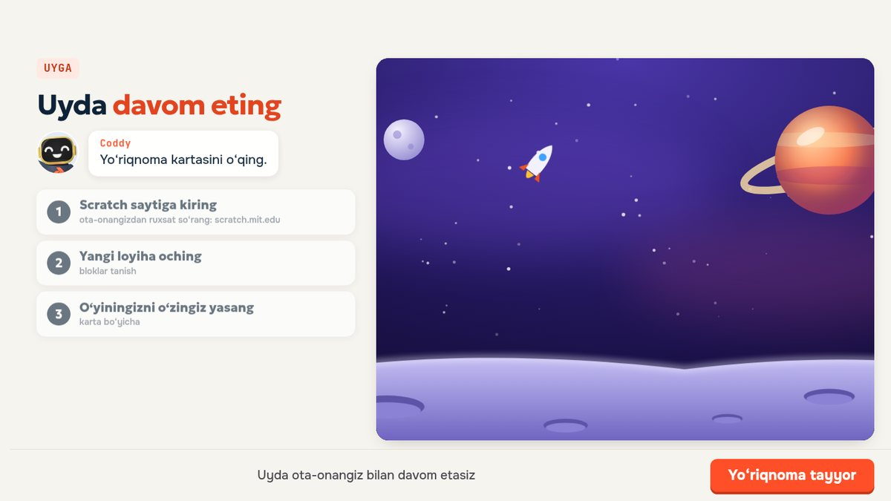
Yana ikki kamchilik
Qaror suratlarini olayotganda ko‘rindi. Ikkalasini ham avtomatik tekshiruv bilan 23 darsda qidirdim.
7. Dasturchalar bir-birining ustiga tushadi
Dastur ustuniga sig‘maydigan uzun dasturda Blockly pastki bo‘lakni ko‘rinadigan joyga itaradi va u yuqoridagi bo‘lak ustiga tushadi. Sabab: dvigatel dasturni bo‘yi bo‘yicha 0,54 masshtabdan kichraytirmaydi (eniga esa shu darslarda 0,45 gacha ruxsat bor); 23-dars raketa dasturiga 0,49 kerak. Topildi: 23-dars — raketa dasturi 4 solo ekranda va ustozning 6-qadamida. Tekshiruv tugadi (23 dars): 18-dars — 5 holat, 19 — 12, 20 — 11, 21 — 5, 22 — 8, 23 — 5; hammasida o‘sha raketa dasturi (jon bloklari bilan), solo’da ham, ustoz ekranida ham. 1–14, 16, 17-dars toza. 15-dars — boshqa holat (2 ta: 13-qadam, solo va ustoz): dasturchalar ikki ustunda, lekin ikkinchi ustun birinchisining ustiga tushgan (pastdagi surat). Sababini tuzatish paytida aniqlayman — A tanlansa shu ham tuzatiladi.
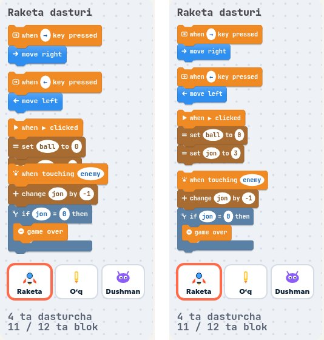
set jon to 3 «when touching enemy» tagida. O‘ngda — A (sahifaning o‘zida sinab olingan).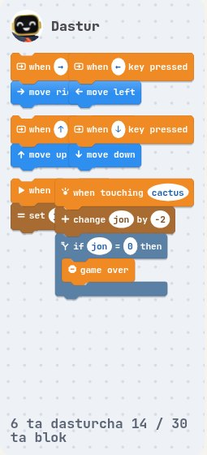
8. Yakun ekranida o‘zgaruvchilar karta ortida
O‘zgaruvchi bor darslarning bola yakunida sahna tepasida «ball», «jon», «qadam» kapsulalari turadi, xabar kartasi esa ularni yopib qo‘yadi. Topildi: 12-dars (tasdiqlangan — oltin namunasi ham shu holda yozilgan) va 23-dars. Tekshiruv tugadi: yana 18-dars (to‘liq yopilgan) va 20-dars (qisman). 11, 21, 22-darsda matn qisqa — kapsula ko‘rinadi.
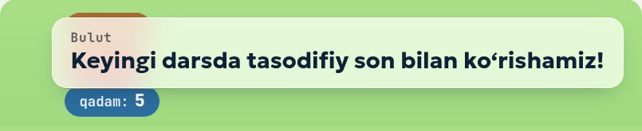
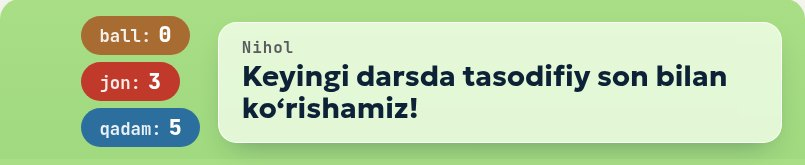
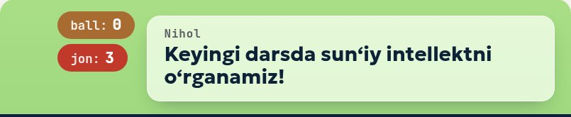
Qolgan 71 savol — tavsiya bo‘yicha qurilgan
Har dars manbasidagi savollar. Hammasi A (tavsiya) bo‘yicha qurilgan va sinovdan o‘tgan, siz hali tasdiqlamagansiz. Ro‘yxatni ochib ko‘ring; e’tirozingiz bo‘lsa, B ni tanlab raqamini izohga yozing. Yuqoridagi 3–6-qaror shu ro‘yxatdagi 20·1, 21·3–5, 23·2–3 ning batafsilidir.
16-dars · Klonlar 10 ta savol
Savollar va qurilgan javob
- 1. Sahna — A: «Kosmos» maydoni (3-darsdagi maydon, kosmos rangida), qahramon pastda, dushmanlar tepadan; 17–18-darsda o‘sha sahna
- 2. Dastur kimniki — A: dushmanniki («Dushman dasturi»), qahramon 1–2-bekatda kuzatadi
- 3. «Klon» oilasining rangi — A: to‘q sariq (Scratch’dagi «Control» rangiga yaqin), Hodisa sariq va Takrorlash yashildan farqli
- 4. Vaqt — A:
waitbloki yo‘q; nusxalar orasidagi vaqtni dvigatel beradi (har blok — bir urish) - 5.
delete this clone— A: 3-bekatda, zarurat bilan (yerda qolgan nusxa yo‘lni to‘sadi) - 6. 3-bekatda qahramon tegishi — A: tayyor (dvigatel): nusxa qahramonga tushsa — jon −1 va nusxa o‘chadi
- 7. 3-bekatda strelkalar — A: faqat ← → (qahramon pastki qatorda)
- 8. Huk — A: uch usul (bittasini besh marta · beshta chizish · nusxa); natija kartada
- 9. Asl ko‘rinadimi — A: ha, tepada turadi (nusxalar undan chiqadi)
- 10. Manba v1 tasdig‘i
17-dars · Kosmik o‘yin 1 9 ta savol
Savollar va qurilgan javob
- 1. Ikki personaj — A: «Raketa» va «O‘q», har biri o‘z dasturi bilan (personaj kartalari)
- 2. Yangi so‘z — A: «personaj»
- 3. O‘qning asli — A: raketa ichida, ko‘rinmaydi; nusxa raketa turgan joyda paydo bo‘ladi
- 4. Nishonlar — A: qimirlamaydigan toshlar (17-dars), tushadigan dushmanlar — 18-darsda
- 5. Tegish — A: dvigatel (o‘q nishonga kirsa — ikkalasi o‘chadi)
- 6. Raketa — A: faqat ← →, pastki qatorda
- 7. Chek-list — A: to‘rt band
- 8. Saqlash — A: ikkala dastur 18-darsga
- 9. Manba v1 tasdig‘i
18-dars · Kosmik o‘yin 2 10 ta savol
Savollar va qurilgan javob
- 1. Dushman — A: uchinchi personaj (o‘z kartasi va dasturi), 16-darsdagi dastur
- 2. Yangi so‘z — A: yo‘q; 5-qadam — «Eslaymiz» (klon, o‘zgaruvchi, shart)
- 3. Tegish — A: dvigatel (o‘q va dushman bir katakda — ikkalasi o‘chadi; dushman raketaga — dushman o‘chadi) +
when touching enemyhodisasi - 4. Ball — A: o‘q dasturida
- 5. Jon — A: raketa dasturida, 12-darsdagi
if jon = 0 then→game over - 6. Dushmanlar oralig‘i — A: dvigatel sekinlashtiradi
- 7. Chek-list — A: besh band
- 8. Natija sonlari — A: «ta dushman urdi» · «ta o‘yin yutdi» · «pog‘ona bajardi»
- 9. 17-dars dasturi — A: saqlangan bo‘lsa — o‘shani ochadi, bo‘lmasa tayyor
- 10. Manba v1 tasdig‘i
19-dars · Bloklar ortidagi kod 10 ta savol
Savollar va qurilgan javob
- 1. Kod ko‘rinishi — A: haqiqiy JavaScript
- 2. Yangi so‘z — A: bitta, «kod»
- 3. Kod oynasi joyi — A: dastur ustuni ichida, bloklar yonida
- 4. Asos o‘yin — A: 18-darsdagi o‘z kosmik o‘yini
- 5. Kodda son — A: son bosiladi, blokdagi ro‘yxat ochiladi
- 6. Kodni klaviatura bilan yozish — A: yo‘q
- 7. 3-bekat — A: «Kodni o‘qiymiz» (bloksiz, oldindan aytish, 3-dars mexanizmi)
- 8. O‘zgaruvchi e’loni (
let ball = 0;) — A: kodda yo‘q - 9. Natija sonlari — A: «ta qatorni topdi» · «ta sonni o‘zgartirdi» · «pog‘ona bajardi»
- 10. Manba v1 tasdig‘i
20-dars · Takrorlash va test 8 ta savol
Savollar va qurilgan javob
- 1. Test shakli — A: amaliy topshiriqlar
- 2. Yangi so‘z — A: yo‘q
- 3. Qiyin mavzuni aniqlash — A: sinf doskasi
- 4. Maslahat — A: 2-bekatda yo‘q, qolganda bor
- 5. «Noto‘g‘ri» — A: deyilmaydi
- 6. Natija sonlari — A: «ta topshiriq yechdi» · «ta o‘yin yutdi» · «pog‘ona bajardi»
- 7. Dars shakli — A: 18-darsdagi o‘yin ustida
- 8. Manba v1 tasdig‘i
21-dars · Shaxsiy o‘yin 1 8 ta savol
Savollar va qurilgan javob
- 1. Shaxsiy o‘yin — A: kosmik o‘yinning o‘z varianti
- 2. Yangi so‘z — A: «loyiha kartasi»
- 3. Karta — A: to‘rt tanlov
- 4. Karta tekshiruvi — A: dastur kartaga mos
- 5. Maqsad (yutish uchun ball) — A: o‘zi hisoblanadi
- 6. Maslahat — A: hamma pog‘onada bor
- 7. Natija sonlari — A: «ta karta to‘ldirdi» · «ta o‘yin yutdi» · «pog‘ona bajardi»
- 8. Manba v1 tasdig‘i
22-dars · Shaxsiy o‘yin 2 8 ta savol
Savollar va qurilgan javob
- 1. Dars shakli — A: 21-dars o‘yinini tugatish
- 2. Yangi so‘z — A: yo‘q
- 3. Sinash — A: ikki marta o‘ynash
- 4. Taqdimot — A: uch gap + juftlikda mashq
- 5. Taqdimot kartasi tekshiruvi — A: avto emas, faqat «Tayyorman»
- 6. Maslahat — A: hamma pog‘onada bor
- 7. Natija sonlari — A: «ta o‘yin yutdi» · «marta sinadi» · «pog‘ona bajardi»
- 8. Manba v1 tasdig‘i
23-dars · Demo Day №1 8 ta savol
Savollar va qurilgan javob
- 1. Yangi so‘z — A: yo‘q
- 2. Mehmon — A: ota-ona o‘ynaydi, bola aytib beradi
- 3. Scratch yo‘riqnomasi — A: karta (uch qadam + jadval), ota-ona ruxsati bilan
- 4. Jadval — A: «Blok studiya → Scratch» uch blok
- 5. Himoya — A: ustoz tinglaydi
- 6. Maslahat — A: 4-qadamda bor, 7-qadamda yo‘q
- 7. Natija sonlari — A: «ta o‘yin tugadi» · «ta mehmon yutdi» · «pog‘ona bajardi»
- 8. Manba v1 tasdig‘i
Oldingi versiyalar (1–15-dars, 9-versiyagacha) — hammasiga javob berilgan
Ro‘yxat qatorlari ko‘rinmasdi
✓ belgisini qo‘shayotganda topildi: Blockly’ning har bir ro‘yxatida (repeat soni, if tomoni, tugma, o‘zgaruvchi, go to — 4, 5, 8, 11, 13, 14-dars) qatorlar oq fonda oq matn edi — bola ro‘yxatni ochsa, sonlarni ko‘rmasdi. Sinovlar qatorni matni bo‘yicha topgani uchun sezmagan. Endi matn to‘q, tanlangan son oldida ✓. Shu bilan birga 14-dars o‘yin pog‘onasida «Maslahat» qulfi «▶ Boshlash»dan keyin ochilmasdi — tuzatildi.

Xakaton №1 — ikki audit nima dedi
Dvigatel auditi: tanlangan «Olma terish» o‘yini 4, 11–13-darsning imkoniyatlarini bitta o‘yinda birlashtiradi — dvigatelda ular bir-birini istisno qiladi, birlashgan o‘yin yangidan yoziladi. Bir nechta qism esa juda katta va xatoga moyil ish talab qiladi. Matn auditi: 37 ta aniq tuzatish (sarlavhalar sig‘masligi, «shart» so‘zi if uchun band, maslahat javobni aytmasin, ustoz namoyishidagi jon hisobi, juftliklar soni formulasi…) — hammasi qabul qilindi.
15·12. Soddalashtirish to‘plami
Sifat kamaymaydi, xato xavfi kamayadi.
15·13. Rol nomi
«Yo‘lboshchi»dagi «bosh» «boshliq» bo‘lib eshitiladi — bola uni «buyruq beradigan» deb o‘qishi mumkin, rollar esa teng.
15·14. «Xakatonchi» yutug‘i sharti
v1 da 3 qism kerak edi — darsning fikri «avval o‘yin ishlasin», 9 yoshli juftliklarning ko‘pi yutuqsiz qolardi.
15·15. 5-darsdagi ishora «Bir xil juftlik — N marta»
«Juftlik» endi bolalar juftligi ma’nosida (bir ma’no — bir so‘z). 5-dars tasdiqlangan — shuning uchun so‘rayapman.
15·16. «Nimasi yoqdi?» kartalari
«Qiyin» tanbeh bo‘lib, «Kulgili» «kulgi bo‘ladigan» bo‘lib o‘qilishi mumkin.
Bloklar kartadan chiqardi — tuzatildi
Ikki sabab bor edi. 1) Safari 9 px dan kichik harfni kattalashtiradi: kichraytirilgan blokda harf katta, hoshiya kichik qoladi — blok kartadan chiqadi (Chrome’da bu yo‘q, shuning uchun sinovlarimiz ko‘rmagan). Endi dvigatel (yangi kichik.js) Safari’da blokni o‘z o‘lchamida chizib, suratdek siqadi; Chrome’da hech narsa o‘zgarmaydi. 2) 4, 5, 13-darsning 1-ekranidagi «O‘tgan darsda» kartasida blok chap ustunga sig‘masdi — hamma brauzerda; endi ustun blok kengligida.


- Endi har dars setkasi ikki brauzerda tekshiriladi: «blok o‘z kartasidan chiqmaydi».
- Yo‘l-yo‘lakay topildi: LMS yig‘masida yangi kod 1-darsni oq ekranga aylantirardi — CRM’ga yuklanmasdan oldin tuzatildi.
- Yo‘l-yo‘lakay topildi: pog‘ona yechilgach, keyingisi ochilguncha (1,4 soniya) yana «▶» bosilsa, bola bitta pog‘onani ko‘rmasdan o‘tib ketardi (hamma darsda bor edi). Endi bir ekranda bitta o‘tish.
Xatoni topish — ishga tushiring, qadam-baqadam yuring


14·5. 3-bekatda «Bitta qadam» tugmasi
3-bekat usuli — «hamma holatni sinash» (ikki labirint, har strelka, random sonlari). 1–2-bekat va ★ da tugma bor.
14·6. Topishmoqni kim topadi (16-qadam)?
Manba qarori: sinfdan taxmin so‘ralmaydi (59-qaror) — ustoz «Bitta qadam» bilan yuradi, sinf kuzatadi.
14·7. «Bitta qadam» — nimani sanaydi?
1-dars qoidasi: «Bitta buyruq — bitta qadam».
14·8. Uch sarlavha bir qatorga sig‘masdi — qisqardi
5-qadam «Muammocha — iz», 7-qadam «O‘zingiz topasiz», 12-qadam «Xato — topiladi!». To‘liq qoida «Xato — topiladigan narsa» yakunda va tayanch gaplarda qoladi.
14·9. Savatlarda xato faqat 3 marta sinagandan keyin aytiladi
13-darsda dvigatel random’ning hamma sonini birinchi ishga tushirishdayoq sanab aytardi — 14-darsda «yashirin xato» yashirin bo‘lmasdi. Maydon chetiga tushish (ko‘ringan xato) — darhol.
14·10. 14-dars tasdig‘i
Xakaton №1 — juftlikda bitta o‘yin
Kursdagi birinchi xakaton: juftlik 60 daqiqada kichik o‘yin yasaydi, ishni bo‘lishadi, vaqtida tugatadi, do‘stlar o‘ynab baholaydi. Manba v1 qoralama (agent yozdi, 534 qator). Dars qurilmagan — yangi tur, qarorlar ko‘p; javoblaringizdan keyin quriladi. Darsning fikri: «Ishni bo‘lamiz, navbat bilan; avval o‘yin ishlasin — keyin qo‘shamiz.»
- 0–10 daqiqa: kirish, huk «Bitta o‘yinni qanday yasaymiz?» (uch karta, uch sinov), yangi so‘z «xakaton», reja, qoida (haydovchi va yo‘lboshchi), juftliklar.
- 10–70 daqiqa — juftlik ishi: o‘yin tanlash (5) → qismlarni yasash (31; har qismdan keyin rollar almashadi) → sinash va tuzatish, 14-dars usuli (11,5) → do‘stlar o‘ynaydi va baholaydi (12).
- 70–81 daqiqa: 2–3 juftlik o‘yinini aytib beradi, yakun, «Sinfimiz bugun».
15·1. Juftlik nechta noutbukda?
15·2. O‘yin turi
15·3. Ishni bo‘lishish
15·4. Vaqt boshqaruvi
15.11 da siz taymer va «Vaqt tugadi»ni olib tashlagansiz (63-qaror).
15·5. Baholash
15·6. Yutuqlar
LMS ga — modul tugagach (93-qaror).
15·7. Solo (kelmagan bola uyda)
15·8. Juftliklarni kim tuzadi?
15·9. Vaqt rejasi
Dars 80–90 daqiqa; dasturda «60 daqiqada».
15·10. 16-qadam — o‘yinni ko‘rsatish
15·11. Qolgan savollar (manbaning 9, 10, 13-savoli)
Amaliyot qolipi va huk bor; «xakaton» — yangi so‘z, alohida ekranda; manba v1 — tasdiq.
Ro‘yxatdagi ✓ belgisi — hech qachon chiqmagan
Blockly son ro‘yxatida tanlangan son oldiga ✓ qo‘yadi, rasmni /sprites.svg dan oladi. Bu fayl saytda yo‘q (404) — belgi bolalarda ham hech qachon ko‘rinmagan. Sinov paytida topildi.
U·3. ✓ belgisini qo‘shaymi?
Labirint o‘yini 1 — qoida: yo‘l bo‘lsa, yuradi


if path … then. To‘rt dasturcha ikki ustunda — bitta ustunga o‘qiladigan masshtabda sig‘masdi.

Sinovda topilib tuzatilgan (9-dars)
- Dasturchalar ustma-ust tushardi (Blockly sig‘maganini itarardi) — ikki ustun, ro‘yxat ochiq bo‘lsa qayta joylash kutadi.
- 16 blokda Ortiqvoy «Joy qolmadi!» chiqmasdi; tasma «4 ta dasturcha» va «12 / 16 ta blok» endi ikki qatorda.
- Ro‘yxatdagi «Yulduz» 1-bekatdagi har yutishda ✓ bo‘lib qolardi — endi faqat ro‘yxat bor o‘yinda.
9·1. Huk sarlavhasi qisqardi: «O‘yin to‘xtamasin. Qanday qilamiz?»
Manbadagi «Adashsangiz ham o‘yin to‘xtamasin. Qanday qilamiz?» proyektorda uch qator bo‘ldi (huk savoliga ikki qator ruxsat). «Adashgan bosish» fikri Coddy gapida qoldi: «Bitta adashgan bosish — o‘yin to‘xtadi. Hammasi boshidan!».
9·2. Dasturchalar ikki ustunda (9–10-darsda dastur ustuni kengroq, labirint ~120 px tor)
To‘rt qoidali dasturcha (12 blok) bitta ustunga faqat ~6 px yozuv bilan sig‘ardi. Suratda — 11-qadam.
9·3. «O‘ynab ko‘rsat» — bitta tugma
Manbada ustoz avval «▶ Boshlash», keyin «O‘ynab ko‘rsat» bosardi. Bitta «▶ O‘ynab ko‘rsat» o‘yinni boshlab, 11 bosishni o‘zi bajaradi; bosilgan strelka sahnaning o‘ng yuqori burchagida bir zum ko‘rinadi.
9·4. Ro‘yxat «O‘yiningizda:» — javon ustunining pastida; «Yulduz» faqat 3-bekat o‘yinida
9·5. 9-dars tasdig‘i
Labirint o‘yini 2 — o‘z labirintingiz, ikki daraja


Sinovda topilib tuzatilgan (10-dars)
- O‘lchovlar (yo‘l, burilish, boshi berk, eshik, kalit, borib qaytish) ikki xil usulda hisoblanib solishtirildi — manbadagi 15 labirint va 7 namunaning hammasi mos.
- Muammocha tartibi: eshik yo‘lni to‘smasa — «Eshik keraksiz!» (kalit bo‘lmasa ham), keyin «Kalit qani?», keyin «Yo‘l yo‘q!». Manbadagi «yo‘l o‘zgarmaydi» noto‘g‘ri edi (12 qadam bo‘ladi) — tuzatildi.
- Asboblar bosilmasdi (qobiqning tasma tugmalari bilan bir xil belgi) — tuzatildi.
10·1. Ikki sarlavha qisqardi
Huk: «O‘yinga ikkinchi labirintni qanday qo‘shamiz?» → «Ikkinchi labirintni qanday qo‘shamiz?» (uch qator bo‘lardi). 16-qadam: «Do‘stingiz o‘yinini o‘ynang» → «Do‘stingiz o‘ynasin» (qadam nomi bilan bir; chap ustunga sig‘madi).
10·2. Huk A kartasini ham dvigatel o‘zi sinaydi
Manbada ustoz A da → ni qo‘lda bosardi. Endi uchala karta bir xil: «Keyingi» — dvigatel o‘ynaydi, natija kartada (A da Bo‘shvoy «Men nimani kutaman?»).
10·3. «Labirint · Bloklar» almashtirgichi — oila tugmalari qatorida birinchi «Labirint»
Labirint yasash ekranlari «Labirint» tanlangan holda ochiladi; boshqa oila tanlansa — bloklar (dasturni tuzatish uchun).
10·4. «Oz qoldi!» ishoralari har shart uchun o‘z soni bilan
- «Devor: 4 ta. Kerak: kamida 6» · «Yo‘l: 12 qadam. Kerak: kamida 14» · «Burilish: 3. Kerak: kamida 5»
- «Boshi berk yo‘l: 1. Kerak: kamida 2» · «Borib qaytish: yo‘q. Kalitni yo‘ldan chetga qo‘ying» · «Eshik qo‘ying — yulduzga yo‘lni to‘ssin»
10·5. «Do‘stingiz o‘ynaydi»: bitta tugma; do‘st «o‘ynadi» = kamida bir qadam yurdi; doskada son
10·6. Bolaning 2-darajasi va dasturi — noutbukda saqlanadi (serverda — LMS bilan, modul tugagach)
10·7. 10-dars tasdig‘i
O‘zgaruvchi: ball — kompyuter sonni eslab qoladi


Qurishda topilib tuzatilgan (11-dars)
- Manbadagi har jadval (9 o‘yin maydoni, eng qisqa yo‘l, har yechim va xato varianti, 5 ta oldindan aytish) mustaqil hisob bilan tekshirildi — hammasi to‘g‘ri; keyin o‘sha jadvallar haqiqiy ekranlarda yurgizildi.
- Javondagi «when touching apple» bloki ustunga sig‘masdi, kapsula «Y ↑» yozuvini yopardi — tuzatildi (setka toza).
- Dvigateldagi hodisa bloklari umumlashtirildi (strelka, olmaga tekkanda, ▶ bosilganda) — 1–10-dars natijasi o‘zgarmadi (oltin farq 0).
11·1. 1-bekatda ball har o‘yin 0 dan boshlanadi; 10-qadamdan boshlab saqlanadi
Manbada son doim saqlanadi. Lekin 1-bekatda set bloki hali yo‘q: birinchi urinishda adashgan bola (masalan, +1 qoldirib ball 4 olgan) qayta o‘ynasa 4 + 8 = 12 bo‘lib, pog‘onani hech qachon yecha olmasdi. 1-bekatda baribir birinchi yutishdayoq keyingi pog‘ona ochiladi — saqlanish u yerda ko‘rinmasdi. «Ball 6» 10-qadamda ustoz o‘yinida ko‘rinadi.
11·2. Boshqaruv — dastur tepasidagi bitta qator, bosilsa to‘rt dasturcha rasmi ochiladi
«Boshqaruv: → ← ↑ ↓» — bloklar sanog‘iga kirmaydi; o‘yinda bosilgan strelka qatorda bir lahza yonadi. Ochilganda — o‘qish uchun (o‘zgarmaydi).
11·3. Javon: 1-bekatda set va when ▶ clicked ko‘rinadi, lekin yopiq; 3-bekatda javon butunlay yopiq
11·4. Oldindan aytish: «Avval sonni tanlang» — xira tugma bosilganda; boshida ishora «Dasturni o‘qing: oxirida ball nechchi bo‘ladi?»
11·5. ★ «O‘z o‘yiningiz» — uchinchi «Oz qoldi!» bandi qo‘shildi
Manbada ikki band bor edi («O‘yin boshida ballni qo‘ying» · «Oltin olmaga ham dasturcha qo‘ying»). Shart to‘rtta: set, ikkala olma turi, yutish, ball 0 dan katta — oxirgisi uchun: «Olmalar ball bersin — change blokidagi sonni tanlang».
11·6. 11-dars tasdig‘i
Jon va qadam — shart o‘zgaruvchini tekshiradi


Qurishda topilib tuzatilgan (12-dars)
- Blokdagi ro‘yxat (o‘zgaruvchi, son) bosilganda tanlov tushib qolardi — keyingi blok if ichiga emas, keyiniga tushardi. Dvigatelda tuzatildi (hamma darsga tegishli; 9–10 sinovlari yashil).
- Manbadagi o‘yin jadvallari mustaqil hisob bilan tekshirildi (kaktusga tegmagan eng qisqa yo‘l, o‘yin qaysi bosishda tugashi) — 77/77.
12·1. Sinov pog‘onasida (15 · 1) yulduzga yetish — yechim emas
Qadam katta qo‘yilsa, bola yulduzga yetib «yutardi» — lekin topshiriq «5-bosishda o‘yin tugasin». Endi: «Oz qoldi!», «Qadam 5 bo‘lsin: 5-bosishda o‘yin tugasin».
12·2. Kapsulalar rangi: ball — jigarrang, jon — qizil, qadam — ko‘k
12·3. Natija: «ta shart qo‘ydi» va «ta o‘zgaruvchi ishlatdi» — eng ko‘pi (yig‘indi emas)
Dastur pog‘onadan pog‘onaga o‘tadi — yig‘indi bitta shartni o‘n marta sanardi. «ta o‘yin yutdi» — faqat yutish pog‘onalari.
12·4. 12-dars tasdig‘i
Tasodifiy son — dastur o‘zi tanlaydi


Qurishda topilib tuzatilgan (13-dars)
- Javondagi random bosilmasdi — blok belgisi qobiqning tasma tugmalari belgisi bilan bir xil edi (10-darsdagi asboblar xatosi bilan bir sinf) — tuzatildi.
- Tayyor go to (random bilan) dastur ustunidan chiqib, Y katagini bosib bo‘lmasdi — X va Y ikki qatorga, masshtab chizilgandan keyin.
- Manbadagi hamma da’vo (savatlar, xato variantlari, «uch marta — 2 xil joy» ehtimoli) mustaqil hisoblandi — 70/70.
- Internet yo‘li (lokal Upstash o‘xshatmasi): 11–13 to‘liq dars sinovlari ustoz + ikki bola alohida brauzerda — 61/61, 54/54, 48/48. Haqiqiy saytda Upstash hali ulanmagan (/api/sinf → «redis yo‘q») — ikki qurilmali dars uchun Vercel’da Upstash integratsiyasini siz qo‘shasiz.
- Suratlarni ko‘z bilan ko‘rganda: huk C kartasidagi blok karta chetidan chiqardi; «Qahramon:» qatorining ▾ belgisi qirqilardi (11–12-darsning «Boshqaruv:» qatorida ham) — tuzatildi. Setka darvozasi buni tutmasdi — endi «ichidan oshish» tekshiruvi ham bor.
13·1. go to — yangi blok: X va Y son katagi (13-darsdan); 3–10-darsdagi go to o‘zgarmadi
Katakdagi son ro‘yxatining oxirida «random» — tanlansa, katakka random 1 to 10 ulanadi; ✕ bilan olinsa — son qaytadi. Javondagi random — tanlangan (yoki oxirgi) go to ning bo‘sh katagiga.
13·2. Huk (2-qadam) — «olma doim (3, 0) ga» natija rasmi bilan (animatsiyasiz)
13·3. repeat sonida random yo‘q (manbada topshiriq yo‘q)
13·4. 13-dars tasdig‘i
Yangi darvoza topdi — tegmadim

8·1. 8-darsda tuzataymi?
Faqat shu qator kichrayadi (bitta CSS qoida), boshqa hech narsa o‘zgarmaydi; 8-dars oltin namunasidan 3–4 surat qayta yoziladi. Dars tasdiqlangan — shuning uchun so‘rayapman.
Xatoni topish — faqat manba tekshirildi
14-dars — amaliyot: 9 ta xatoli dastur (takrorlash, kulrang rasm, ikki labirint, o‘yin, random — hammasi birga), yangi «Bitta qadam» tugmasi va «aynan bitta xato» tekshiruvi. Qurishni boshlamadim: dvigatelga ikki katta yangilik + besh xil sahna + 1–13 regressiyasi 10:30 gacha sifatli sig‘masdi, chala dvigatel qoldirmadim. Qilingani — manbadagi har dastur mustaqil hisob bilan tekshirildi (68/68) va 3 joy tuzatildi. Quyidagi savollarga javob bersangiz, keyingi seans darrov quradi.
Manbada tuzatilgani
- 8 · 3 va 11 · 1 — manba «faqat shu tuzatish» degan, lekin ikkinchi yo‘l ham ishlaydi (go to dan keyin → qo‘shish; birinchi repeat 2→1). Ikkalasi ham haqiqiy tuzatish — pog‘ona natijani tekshiradi.
- Ustoz varag‘idagi «uch ishga tushirishda 7 chiqishi — 41%» → 42%.
14·1. Dasturdagi «5 ta dastur» — 9 ta pog‘ona (har biri bitta xatoli dastur) + 3 ★; natija — kamida 5 tasi tuzatildi
14·2. «Bitta qadam» tugmasi — «▶ Ishga tushir» yonida, keyingi darslarda ham qoladi
Har bosish — bitta blok; qahramon kulrangdan chiqqan qadamda to‘xtaydi, blok belgilanadi. Bu dvigateldagi eng katta yangilik — 15-darsdan keyin ham hamma studiyada bo‘ladi.
14·3. ★ «Topishmoq» — bola bitta xatoli dastur tuzadi, dvigatel «aynan bitta xato»ni o‘zi tekshiradi
14·4. 3-bekatda uch xil sahna — ikki labirint, o‘yin, savatlar
Oltin namunalari — vaqt poygalari tuzatildi
5-dars: bola pog‘onani yechgach 1,4 soniyada keyingisi o‘zi ochilardi va CPU band bo‘lsa stsenariyning keyingi qadamidan keyin ekranni surib yuborardi — eski namuna ham shu poyga bilan yozilgan ekan. Stsenariyda avto o‘tish o‘chirildi, namuna qayta yozildi, ikki solishtiruvda farq 0. 8-dars: ikki ketma-ket ijroda belgilar taymeri aralashardi — stsenariyga 1 soniya kutish; eski namuna bilan farq 0 (dars o‘zgarmagan). Dars kodiga tegilmadi.
5-versiyadagi hamma savolga javob berilgan: 3–8-dars tasdiqlandi, A·1/A·2 1–2-darsga ham, U·2 — «Sinfimiz bugun» qoladi, 11–14 manbalari qabul. Suratlar shu sahifaning eski fayllarida saqlangan (img/d3-…, d4-…, … d8-…). To‘liq yozuv — HOLAT.md, 20.11.